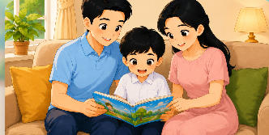
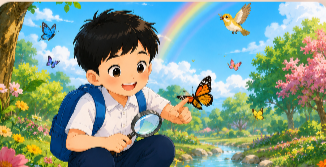

Chủ đề 1: Tôi và các bạn

Chủ đề 2: Mái ấm gia đình
Chủ đề 3: Bài học từ cuộc sống

Chủ đề 4: Thiên nhiên kì thú
BƯỚC 2: LUYỆN ĐỌC CÂU & GIẢI NGHĨA TỪ
💡 Giải nghĩa từ khó:
Đang tải từ vựng...
🎤 Bấm "Đọc theo" và đọc to thành tiếng:
Câu hiện tại
Nội dung câu...
🌟 Thỏ thông thái nhận xét:
Câu 1 / 3
BƯỚC 3: LUYỆN ĐỌC TOÀN BÀI & THỎ THÔNG THÁI (AI) CHẤM ĐIỂM
Em hãy tự đọc to toàn bài, sau đó nhờ Thỏ thông thái chấm điểm nhé!
Tiêu đề bài học
Nội dung toàn bài...
🌟 Thỏ thông thái nhận xét toàn bài:
BƯỚC 4: TRẢ LỜI CÂU HỎI ĐỌC HIỂU
BƯỚC 5: TRẢ LỜI CÂU HỎI TRẮC NGHIỆM
Câu 1 / 5
BƯỚC 6: LUYỆN TẬP MỞ RỘNG (Trang 1 / 4)
1. Nối ghép thông tin cho đúng nội dung bài học:
2. Nhận định Đúng (Đ) hay Sai (S) theo nội dung bài:
3. Điền từ thích hợp vào chỗ trống:
Trang 1 / 4
🎉 XUẤT SẮC HOÀN THÀNH BÀI HỌC! 🎉
Bé đã hoàn thành xuất sắc các thử thách đọc mẫu, luyện đọc, trả lời câu hỏi, trắc nghiệm và bài tập!